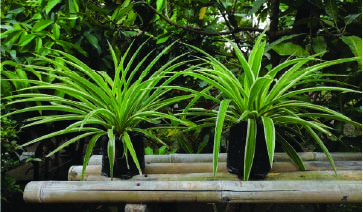
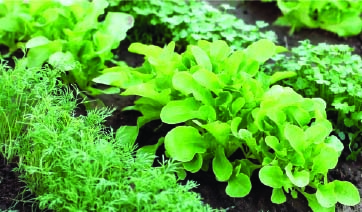
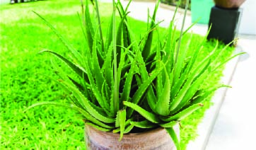
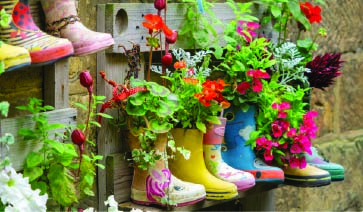

Blog

 Fern Greenleaf
Fern Greenleaf
Houseplants with Attitude: Meet the Divas of Your Living Room
If you thought your Monstera was just sitting quietly in the corner, think again! These houseplants are full of sass, drama, and demands. From diva-like Calatheas that throw a tantrum if you mist them wrong to ferns that seem to love dying for attention, we’re here to introduce you to the plant kingdom’s most dramatic members.

The Secret Social Lives of Plants
Your plants aren’t just photosynthesising - oh no, they’re plotting. While you’re sleeping, your ficus is texting the succulents about that time you forgot to water them, and your pothos is busy spreading rumours. Explore the underground (or should we say under-soil) world of plant socialisation!

 Ivy Sproutson
Ivy Sproutson
Vegetable Gardening for Lazy People
Gardening doesn’t have to be hard, especially if you’re a pro at doing as little as possible! Here’s your guide to growing veggies that practically take care of themselves, so you can binge-watch your favorite shows while your garden does all the heavy lifting.

 Lily Thistleton
Lily Thistleton
Plants You Can’t Kill (Unless You’re Actively Trying)
If your thumb is more brown than green, this post is for you. We’ve gathered the hardiest, most un-killable plants that can survive even the worst neglect. You’d practically have to insult them daily to make them die - and even then, they might just thrive out of spite!

 Basil Bloomfield
Basil Bloomfield
Grow Your Own Quirky Garden Gang
Why settle for ordinary plants when you can have a garden full of characters? From the playful bounce of the Sensitive Plant to the dramatic movements of the Venus Flytrap, we’ll introduce you to some quirky plant pals that are sure to add a little fun and flair to your garden. Get ready to grow a crew with serious personality!